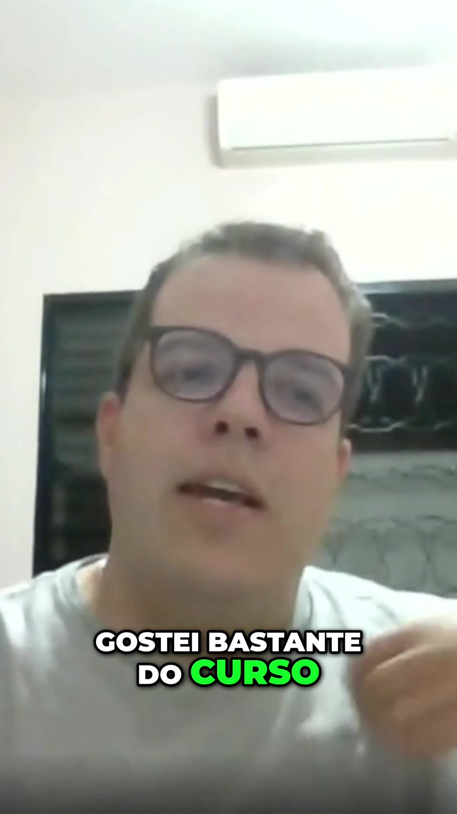
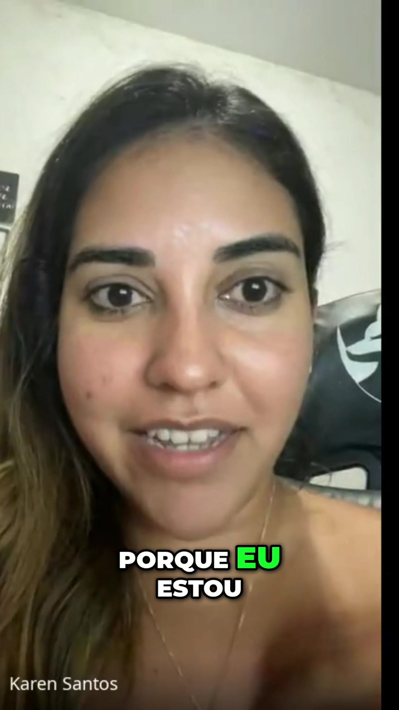
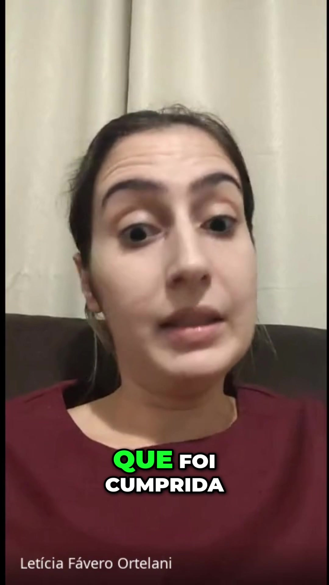
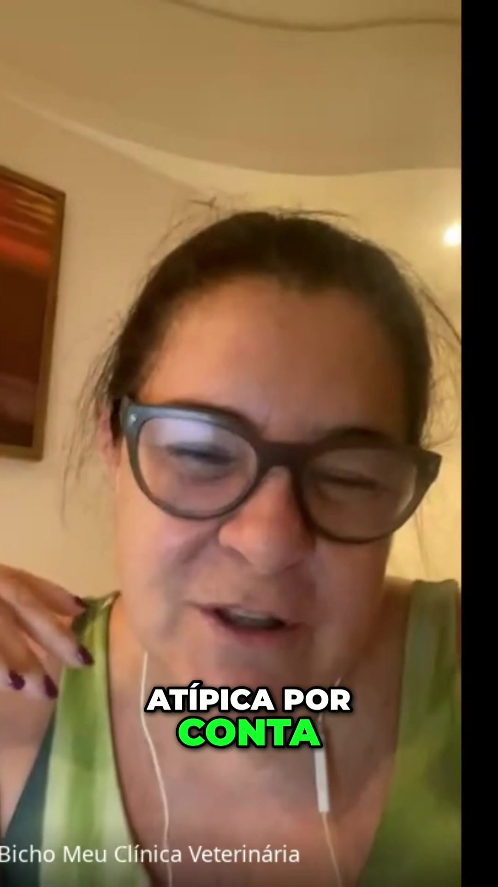

01
Antes
Curso Preparatório Online
Acesso imediato após a inscrição. Chega em Campinas já nivelado para aproveitar cada minuto ao lado do Renato no que realmente importa.
Pela 1ª vez, o método que formou mais de 2.000 veterinários acontece ao vivo, na sala com você — em Campinas, com as mãos na massa.
⚡ Lote 1 com o melhor preço — poucas vagas disponíveis
Vídeo. Pausa. Replay. Anotação no caderno. Dúvida que fica pra depois.
Isso funciona — e é por isso que mais de 2.000 veterinários já passaram pela Formação Anestesia Descomplicada.
Mas nos dias 27 e 28 de junho, o Prof. Renato Piccolo vai trazer pela primeira vez o Anestesia Descomplicada para o presencial.
Esse formato nunca existiu antes. Não é uma aula ao vivo. Não é um webinário. É o mesmo método que já formou mais de 2.000 veterinários — agora com você na sala, ao lado do Renato, com as mãos na massa.
Você vai ver a mão dele. Fazer a pergunta na hora. Receber a correção em tempo real.
Esse é outro nível — e você sabe disso.
Sendo direto: com 10 vagas, quem entra nessa turma é quem veio pra jogar.
Você não está comprando só 2 dias em Campinas.
Você está entrando numa jornada completa em 3 etapas.
Acesso imediato após a inscrição. Chega em Campinas já nivelado para aproveitar cada minuto ao lado do Renato no que realmente importa.
27 e 28 de junho, em Campinas-SP. Aprenda na prática, ao vivo, com as mãos na massa. Faça as perguntas que nunca couberam em vídeo.
O aprendizado não termina no domingo. Sessão de mentoria com o Renato para aplicar o que aprendeu com segurança na rotina clínica.
Antes. Durante. Depois. Uma jornada completa.
Ao final dessa jornada, você vai saber:
Anestesiologista veterinário com mais de 30 anos de experiência — 16 anos em clínica geral e 15 anos com dedicação exclusiva à anestesia de pequenos animais.
Coordena a Pós-Graduação em Anestesiologia Veterinária em parceria com a Faculdade Anhanguera (Grupo COGNA) — a maior instituição de ensino da América Latina.
Nos dias 27 e 28 de junho, pela primeira vez, o Anestesia Descomplicada acontece no presencial. O mesmo método. O mesmo Renato. Mas agora na sala com você.

▶"Ele não ia fazer esse curso presencial — e hoje fala que foi um divisor de águas."Aluno Anestesia Descomplicada

▶"Estava há 3 anos sem anestesiar. Hoje opero com confiança."Karen Santos

▶"Pretendo fazer esse curso mais 10 vezes — a promessa foi cumprida."Letícia Fávero Ortelani

▶"Esse curso me deu confiança pra começar — mesmo numa rotina atípica."Bicho Meu Clínica Veterinária
"Só fazia inalatória até ver isso. Mudou completamente meu jeito de anestesiar."Aluna Anestesia Descomplicada
"Aprendeu a fazer a anestesia de 9 minutos — ele é pra ser incrível."Aluno Anestesia Descomplicada
Se você está lendo isso agora, o Lote 1 ainda está disponível — e é agora que você garante o melhor preço.
⚡ Poucas vagas disponíveis neste lote · Sem spam, seus dados estão seguros
Sim. O conteúdo é construído para quem já atua com anestesia na clínica — seja iniciante ou experiente. O Renato vai do protocolo à execução, sem presumir o que você já sabe.
O endereço completo é enviado por WhatsApp assim que sua vaga é confirmada. O evento acontece em Campinas-SP nos dias 27 e 28 de junho.
Dois dias de imersão com o Prof. Renato Piccolo valem mais do que meses tentando aprender sozinho. Se você atua com anestesia e quer evoluir de verdade, reorganize a agenda. As 10 vagas não vão esperar.
Sim. Todos os participantes recebem certificado de conclusão.
Assim que você confirma sua vaga, o acesso ao curso preparatório online é liberado. O conteúdo nivela todo mundo antes do presencial — você chega em Campinas pronto pra aproveitar cada minuto da prática.
Após o presencial, é agendada uma sessão de mentoria e tira-dúvidas online com o próprio Renato. O objetivo é tirar do papel — ajustar protocolos pros casos reais que você vai aplicar na sua rotina clínica.
27 e 28 de junho, Campinas-SP. Lote 1 liberado.
10 vagas.